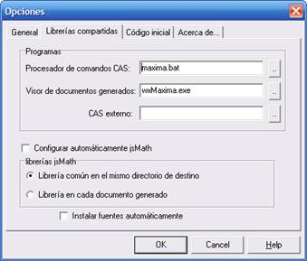
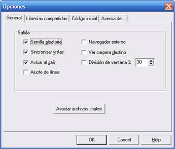

Matexe no requiere programa de instalación para ser instalado. Basta con copiar el directorio del programa con el ejecutable y las librerías incluidas en él. Sin embargo es necesario configurar algunos parámetros en el cuadro de dialogo de opciones del programa. La primera vez que se ejecuta el programa, es necesario haber iniciado sesión como administrador.
En la pestaña “librerías compartidas” es necesario indicar la ruta al programa de línea de comandos Maxima (habitualmente localizado en …\Maxima\bin\maxima.bat). Este es el único paso imprescindible para la instalación (Consultar la sección de problemas de instalación)

En el mismo panel se puede indicar adicionalmente la localización del programa GUI para utilizar directamente Maxima y poder realizar cálculos desde fuera del programa (…\Maxima\wxMaxima\wxMaxima.exe).
Si se desea, es posible asociar los archivos con extensión .matex con el programa Matexe, de modo que se pueda iniciar el programa simplemente haciendo doble click sobre el documento.

Created with the Personal Edition of HelpNDoc: Produce electronic books easily